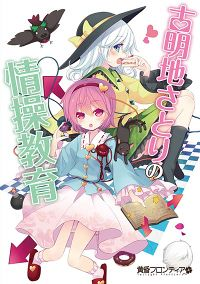
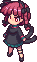

- Welcome to Touhou Wiki!
- Please register to edit. For assistance, check in with our Discord server or IRC channel.
Komeiji Satori no Jousou Kyouiku
Satori Komeiji's Mental Education | |
|---|---|
|
 Official cover art.
| |
| Developer | |
| Publisher | |
| Released |
August 11, 2012 (Comiket 82) |
| Genre |
Puzzle Action Game |
| Gameplay |
Single-Player |
| Platforms | |
| Requirements |
|
Komeiji Satori no Jousou Kyouiku (古明地さとりの情操教育, lit. "Satori Komeiji's Mental Education") is a Touhou Project fangame developed by Twilight Frontier, which is their first and currently only single-player puzzling game. Unlike Twilight Frontier's early games or official Touhou games, it uses isometric projection graphics in a similar fashion to Q*bert. It stars Satori Komeiji as the sole playable character of the game. It's sold for ¥1000 on a CD-ROM.
The story is rather vague, but it's suggested via animation that Byakuren Hijiri (Stage 100 boss) has Koishi Komeiji, Rin Kaenbyou and Utsuho Reiuji dancing, presumably to brainwash them. Satori, rather suspicious, makes them turn away by treating them to sweets via mental education. Eventually, they'll punish Byakuren, but unfortunately Toyosatomimi no Miko (Final boss) will also try and brainwash the three, so therefore she also needs to be punished.
The game has also been coded to use Tiled Map Editor, which gives you the option of making your own maps. There are example maps called 'mihon_all' and 'mihon_limited' ('mihon' (見本) meaning 'sample') that shows all the objects of the game in a map. This could give continued playability by giving friends maps that can be challenging or frustrating.
Gameplay[edit]
You get a total of 3 save slots. The main objective for all of the 120 stages is to make Satori guide Koishi, and also on the occasion Rin and/or Utsuho, to a giftbox to clear the stage as they wander around. Satori can move in any direction, but the others can only move one way, but can walk the opposite way if they bump into a wall. Satori must control their movement with various objects. Satori has an unlimited amount of lives, but the others have 3 each; you'll be able to tell if someone has only got 1 life left because they'll stumble incoherently. Unfortunately, if someone trampled into Satori, she'll stay on the floor until they walk off her, but if Satori was carrying an object, then she'll be stuck with the object on top of her until either the others find the gift-box or the player resets. Resets will also be required if anyone falls into an endless pit, water, swamp or manga, or if Satori was bombed. If one person dies (excluding Satori), the text "Guidance failed" (指導失敗 Shidō shippai) will appear. Most of the game is played on some kind of board, where you'll have the "real" characters watching, and their emotions will change depending on their mini-self's status in the game.
If you feel like you're stuck, you can pause and select "Stronger Koishi" (「こいしを強くする」 'Koishi o tsuyokusuru') (the third option down) to allow the characters to have unlimited lives, but none of your scores will be recorded. You'll be timed, and the aim is to finish a stage as quickly as possible. Finishing a stage, you'll be presented with the following info: 'Guidance Time' (指導時間), 'Guidance number of times' (指導回数), 'Walking distance' (歩行距離) and 'Processing fall rate' (処理落ち率). There's also a ranking system in the game, where you can get the following stamps:
- "New" (新 sara) is when a new stage has opened and is yet to be visited.
- "Passable" (可 ka) is when "Stronger Koishi" was used.
- "Good" (良 ryou) is when the player completed the stage normally.
- "Excellent" (優 yuu) is when you clear the time faster than the target set on a certain stage.
Furthermore, you get a face of a character for when you completed certain requirements as followed:
- Koishi — Completed stage 100 (fight against Byakuren)
- Orin — Complete stage 120 (fight against Miko)
- Okuu — Clear every stage in the game.
- Satori — Clear every stage in the game with the rank 'excellent'.
Controls[edit]
The controls are defaulted to using the keyboard, but can be changed in-game under "Key config" (キーコンフィグ Kīkonfigu) to also optionally use a controller. The controls are:
- ←, →, ↑, ↓ are for diagonal movement.
- Z allows Satori to pick up objects. Pressing Z again will determine which side Satori wants to put the object.
- X speeds up the stage to move faster. This doesn't affect the time, so this can be a big advantage.
- Esc pauses the game.
There's also the option called "Change the direction of 'up'" (「うえ」の向きを変える 'Ue' no mukiwokaeru), as shown in the left image, to set Satori's 'up' position. By default, the 'up' orientation faces towards north-west. The third option recommends a controller, since you'd have to press ←&↑ simultaneously or use the analogue stick to move north-west. Because of the isometric view, this may be disorienting for some people.
Objects[edit]
On most of these objects, Satori can pick these up one at a time and place it in-front of a character's path for something to happen. There are cut scenes before certain stages that'll visualise what they do.
The characters' target to an endless amount of sweets and cake, and to end to a stage (officially called 'goal'). If, for example, Koishi has one side of the box, then the stage needs to be setten out so Rin and/or Utsuho will enclose on the goal from separate directions. Never have one directed to an already-filled side. Sweets, cakes and doughnuts come out if cleared, a limited amount if using "Stronger Koishi" and they'll be bigger if ranked "Excellent". Whoever's waiting will start to dance. Satori cannot pick these up. |
Cakes are used to maximise a character's life back to 3. They can also be used to slow a character down to give Satori more time to solve a stage's puzzle and place other objects to the correct spot. They disappear once used. |
Placing an arrow in-front of a character will make them turn either left, right, go backwards or forwards. Placing an arrow pointing in the same direction as the character will make her smash the arrow so she can march forwards. One pointing opposite her will make her do a U-turn. Also, if a character is one platform higher than Satori, Satori can hold the arrow, stand at the bottom of an edge and a character can still read its directions. |
Springs (officially called 'jumpers') can allow a character to jump two blocks forwards, either to pass an enemy, get over a hole or to get to higher platforms. Satori can also use these, but she much be on a higher platform fall on them and make use of them. If an object or an enemy is in the way, then they'll be squashed and never to be seen again. If someone else is in the way, they'll be trampled for a while, and a character will lose a life. |
Mushrooms, a likely reference to Twilight Frontier's Super Marisa Land and New Super Marisa Land as one stage name suggests, will make a character confused. They'll go the opposite direction an arrow points, and will smash a bomb with their head rather than kicking it away. However, they can also maximise health and can slow them down to have more thinking time. They disappear once used. |
Peppers (officially called 'hot food') will make a character burn her mouth, make her face red and make her run, destroying anything it her path such as objects and stage enemies. Only a wall or a bomb can make her stop. However, they can also maximise health. |
- Bombs
First, blue bombs are explosives that, when a character kicks one, it'll destroy anything within the cross sections (not diagonally) with the impact of one block, including Satori and the gift-box. Having these next to each other will cause a chain reaction. It'll still take one life from a character, and instantly kill Satori. There are also red bombs, which are more powerful than blue ones, because their explosives can go a long way until they hit a wall, object or person, similar to a rook on a game of chess.
Types of obstacles[edit]
These are tiles that, once been stepped on, will fall down an endless pit. There's just enough time for Satori to run over one as soon as a character steps off one. Placing objects on them will not affect them. |
Ice tiles that technically only affects Satori. Once she walks onto it, she cannot stop or move left or right, but she can face to one side and pick an object up as she slides across |
A combination of the previous two. |
Boulders (officially called 'brittle static') are rocks that are unpassable, but can be walked on above. Bombs can also destroy them. |
Lift switches that can raise a lift up or down to get a character or Satori to a higher platform. One switch can work with only certain types depending on its colour, which are blue, red, green or yellow. |
Warp tiles can teleport Satori, a character, stage enemies or objects to a different part of the stage. They come in four different colours; blue, green, red and yellow. |
Enemies[edit]
These enemies can take a life from a character, but will also disappear if that happens.
The Kedama are the first stage enemies to appear in the game. They'll aimlessly move forwards and backwards. |
There are two types of fairies. The ones with a green dress with blonde hair will stay in a certain position and fly forwards at a speed if someone steps in-front of them. They'll stop flying and stop halfway if someone can move out of their sight straight-away. Blue dressed ones with pink hair will slowly home towards someone. They are omnidirectional. |
- Byakuren & Miko
Although Byakuren and Miko are technically the boss and final boss respectively, they are not harmful; they act more like an unmovable object and it is the stages themselves that makes it hard to complete. It requires only one bomb to defeat them, but they'll be standing on three golden blocks that also need bombing (in resemblance to a boulder) in order to bomb the boss. They both share the same music theme.
Stages[edit]
- First Arrow (はじむてのやじるし): Simple stage to get use to the general gameplay.
- Two Arrows (ふたつのやじるし): Simple stage using two arrows.
- Screen Shame Wall (がめんはじはかべ): The first stage that requires you to bump into a wall and using a cake.
- Narrow Room (せまいへや): You need to get Koishi to get through a tight box.
- Opening Fall! (あなはおちるよ): First stage to use an endless pit. Don't make Koishi fall!
- Koishi One Above (ひとつうえの): You need to keep Koishi on the top platform without falling off!
- Detour (まわりみち): Place the arrows correctly to make Koishi walk around.
- First jump (はじめてのジャンプ)：First stage to use a spring. Set the stage correctly before putting the spring in-front of Koishi.
- Physical Labour (にくたいろうどう): Quickly remove the arrows out of Koishi way and re-locate the spring!
- Continuous Jumping (れんぞくジャンプ): Place the springs so Koishi doesn't fall.
- A Load of Arrows (やじるしがいっぱい): Move the arrows to get through them.
- A Load of Jumping (いっぱいジャンプ): Although Koishi isn't jumping a lot. Try and get her onto the higher platform in the middle.
- Vortex (うずまき): Make Koishi walk outwards from a spiral.
- Round Trip (おうふく): Koishi can't walk around, so you have to make her go the opposite way.
- Jumping Around (ジャンプしていっしゅう): This one take patience and correct timing.
- What answer is it? (なん答べられるか): There is a shorter way than going round the path.
- You may not use (つかわないかも): The box is right next to Koishi, so she needs turning around.
- Big Pond (いけポチャ): First stage to use water. There are dots of water around.
- Go Over the Beyond (すいらをこえて): Satori starts on a higher floor, and try to direct Koishi who's lower.
- Koishi at the Opposite Bank (むこうぎしにこいし): Similar to stage 8, but with water.
- Together with Orin (おりんといっしょ): First stage to also use Rin. Get both to the gift-box!Rin
- Jumping with Orin (おりんとジャンプ): Get Koishi & Rin to jump over water.
- Orin and a Passageway (おりんとつうろ): Try and get the two out of a narrow path.
- Orin and a Confluence (おりんとごうりゅう): Try and get Rin & Koishi over a confluence
- Kill the Kedama (けだまをたおそう): Have Koishi kill only three Kedama.
- Avoid the Kedama (けだまをよけよう): Ensure that Koishi and Satori isn't hit by a Kedama.
- Previously Either (とちらかをさきに): Get Rin & Koishi to the centre of the stage.
- Physical Labour 2 (にくたいろうどう２): Like the first one, but also another arrowed path for Orin.
- Unsavoury Kedama (けだまふみ): Satori must kill the Kedama by walking on them from above.
- <translate> (けだまになんかまけない): Have Koishi kill all the Kedama without dying.
- Go Through the Floor (とおるとおちるゆか): First stage to use brittle tiles. Make sure Koishi doesn't stop moving.
- Go Through the Floor 2 (とおるとおちるゆか２): A harder version of the previous stage.
- Let's Throw to the Other Side of the Wall (かべのむこうになげよう): Using only one spring, throw objects to the other side to kill the Kedama.
- Pass Through the Back (うしろをとおる): Get Rin & Koishi through the falling path.
- Block the Kedama (けだまをブロック): Prevent the Kedama from reaching Koishi & Rin.
- Block the Kedama 2 (けだまをブロック２): This time, the Kedama walk in-front of Rin & Koishi.
- Fall the Floor of the Valley (おちるゆかのたに): Work out how to navigate Koishi without falling yourself.
- Collision Condolence (しょうとつちょうい): Prevent Koishi & Rin from colliding.
- Somewhere in the Jump (どこかをジャンプで): You need to work out where Koishi can jump to get to the goal.
- Move Aside and not Fall (どけないとおちる): Get Satori to remove the arrows.
- Okuu also Together (おくうもいっしょ): First stage to also use Utsuho. Get all three to the gift-box.
- Hurry Movement (いそいでいどう): Quickly get two arrows to other sides of the room to guide the three.
- A Load of Arrows 2 (やじるしがいっぱい２): Like the previous, but this time with Orin & Okuu.
- Rotate and not Fall (まわらないとおちる): There is one pit in-front of the gift-box; avoid it!
- Amazingly Slippery (すっごいすべるよ): First stage to use ice tiles. Satori must place the arrows without slipping off.
- So as not to Collide (ぶつからないように): Prevent Orin & Koishi colliding on ice.
- Tackle (たいあたり): With the arrow, you must collide into Koishi at the right time.
- <translate> (すべらぢるをえない): Get the arrows in the right spot without sliding off.
- Using the Corners (かどをつかって): Workout how to get Koishi to go through the centre to the gift-box.
- Slipping to Fall (すべっておちる): First stage to use brittle ice tile. Slip your way through the correct path.
- Floor of Shining Ice (ひかるこおりのゆか): Quickly go around the blocks to place the arrows.
- Jumping at the Right Time (ジャンプでじかんさ): Try not to break their paths.
- First Switch (はじめてのスイッチ): First stage to use lift switches. Guide Koishi straight without wall-crashing.
- Trying to Round Trip (おうふくしよう): Get Koishi facing the right direction, without falling or bumping at the wrong place.
- Technical Switch (テクニカルスイッチ): This time, you need to guide Koishi to get you to a higher platform.
- Alternatively in a Hurry (いそいでこうごに): Without breaking your own paths, guide Koishi over the lifts.
- Four Job Switching (よんしょくスイッチ): Keep Orin & Koishi sound as you switch between buttons.
- 3 Directions to the Branch (さんほうこうにぶんき): Get the three to branch round to the gift-box.
- Come Back (もどってきて): Try and get the three to turn around.
- Four Mere Passages (よんほんのつうろ): Get the three away from the icy fall, including yourself.
- Fairy Forest (もりのようせい): Blonde fairies first used on this stage (Possible reference to the Fairy Forest in Youyou Kengeki Musou). Have Koishi avoid them.
- Sacrifice Satori (さとりをぎせいに): Use Satori to get in the fairies' way.
- Fairy Slowly (ゆっくりようせい): Pink fairies first used on this stage. Get the fairies follow Satori and away from Koishi.
- Dropping at Induction (ふんでゆうどう): Make sure Koishi only hits one fairy.
- Delicious Mushrooms (おいしいキノコ): First stage to use mushrooms. Koishi needs to go the arrows opposite to not fall off.
- Throw the Food (たベものをなげこむ): Throw food onto the inner area to have Koishi eat.
- Mushroom Cultivation (キノコさいばい): Work out how to navigate Orin and Koishi using only one arrow and a load of shrooms.
- <translate> (たベなくてもいい): Get the three to the gift-box using only 2 arrows and three shrooms.
- Warping Floor (ワープするゆか): First stage to use a warp tile. Simply get Koishi to the over side.
- Don't Warp (ワープをさせない): Prevent Koishi warping by standing on the warp time.
- Paddy Field (たんぼ): Correctly teleport Koishi and place the spring correctly when possible.
- Warp in Two (ふたりでワープ): Place the arrows near the correct warp tile to get the two home.
- Don't Fall (おちないように): Quickly carry the arrows to the correct warp tile without anyone falling into the water.
- Warps & Switches (ワープとスイッチ): Both Satori and Koishi will help each other to have Satori to try and get the spring to the correct place.
- All Fairies (ようせいばん): Trick the fairies into (not) running into you to remove the shrooms and get that spring. Use the shrooms to aid Koishi.
- Fairy Festival (ようせいまつり): A field of Fairies! Lurk them away from Orin & Koishi as much as possible without hurting yourself.
- Satori and the 6 Mushrooms (さとりと６つのキノコ): A homage to New Super Marisa Land. All 6 shrooms must be used to guide all three.
- Avoid (よけたい): Trap the fairies so they can't run into Koishi. Also replace the arrow.
- Eating Alternately (こうごにたべる): In a tight space, guide Koishi around a narrow circle. She'll be eating cakes & shrooms, so make sure to use the right arrow.
- Skilfully Occupy (じょうずにふさごう): Make sure Rin & Koishi use the right warp tile and not fall into the water.
- Defend Gift (プレゼントをまもれ): First stage to use a blue bomb. Try to keep the gift-box safe!
- Break the Rocks (いわをこわそう): In a limited time, place the bombs near the boulders and not get hurt. This contains a chain reaction of bombs.
- Sacrifice Satori 2 (さとりをぎせいに２): Quickly re-locate the bombs so they don't destroy the gift-box before Koishi comes near!
- Spicy Food (からいたべもの): First stage to use a pepper. Place the bomb on the correct spot to stop her running.
- Force Breakthrough (きょうこうとっぱ): Give Koishi a pepper so she can run through the fairies.
- Order is Important (じゅんばんがだいじ): Place each item in the appropriate socket between the boulders.
- Various Throwing (いろいろなげこむ): Without moving, throw the correct object onto the warp tile. Start with a shroom.
- Bomber Koishi (ボンパーこいし): The name and stage is a direct homage to the retro video game Bomberman. Get Koishi to bomb the correct boulders and have her navigated through the maze.
- Red Bomb (あかいばくだん): First stage to use red bombs. Try and use these bombs to break the boulders, whilst guiding Koishi & Orin around.
- Fairy Extermination (ようせいをせんめつ): Kill as many fairies as possible using red bombs without hurting Koishi or the gift-box.
- Defend Gift 2 (プレゼントをまもれ２): Try and very quickly move the blue bombs away from the gift-box and stand from the top afterwards.
- Warp with Red Bomb (ワープとあかいばくだん): Once Koishi bumps into a wall, quickly put bombs in-front of her so she can destroy the boulders one by one.
- Explosive Caution (ばくはつぷつちゅうい): Guide Koishi through the tight room without setting off a bomb!
- Remote Control (えんかくそうさ): Place the bombs accordingly so they can make a sort of reflexion to destroy the boulder that's protecting the gift-box.
- Fairy Extermination 2 (ようせいをせんめつ２): Have Koishi run through the fairies and warp tiles, but also try and stop her with a bomb.
- Kedama Shooting (けだまシューティング): Make Koishi shoot bombs at various Kedama so she can pass through.
- Bomber Koishi 2 (ボンバーこいし２): A harder version of the previous, this time using red bombs. By placing the bombs correctly, you only need to make an explosion once to get the arrows and navigate Koishi.
- Single Step Top of Maze (いちだんうえのめいろ): Try and guide Koishi through the maze. A clue is to only make her turn left, left and left again
- Dummy is Full (ダミーがいっぱい): Try and get Koishi over the platform and into the gift-boxes area surrounded by water. Use springs to get Satori to collect other springs.
- Defeat Hijiri (ひじりをたおせ): The boss of the game! You need to use Koishi to bomb the golden blocks and Hijiri to get to the gift-box. Simultaneously, get Rin & Okuu turning different directions so they'll be teleported to the gift-box. After this, the credits will roll and it'll cut to a scene showing that Miko has taken over, which also unlocks the last 20 stages.
- Bonus (おまけ): Stages beyond here are where they're the real challenge. Guide Koishi around the top platform, using a spring to prevent her from falling.
- Too Much Jumping (おおすぎるジャンプだい): Get the arrows to bounce to the other side so Koishi doesn't fall. Then, Bounce the springs to the other side so Koishi can bounce through.
- Kedama Route (けだまのみち): Using only one arrow, trap the Kedama so they can't hurt Koishi.
- From a Location of Another (べつのばしょから): Guide Orin & Koishi through this complex by placing a spring over their path.
- Don't Fall Root (おちないルート): Get Koishi on the floor and place the arrows correctly without removing too many brittle tiles.
- Carrying the Jumping Theme (ジャンプだいをはこぶ): Carefully place all the objects on the floor and get the spring to have Koishi & Orin to jump over. There's a reason why there's 2 cakes.
- Skilfully Tackle (うまくたいあたり): All you need to do is grab the arrow on the other side and bump into Koishi at the right time.
- Everything Falls (ぜんぶおちるゆか): Koishi needs to go left, right, left. Try and make her do that on brittle tiles.
- Somehow, Eat Until Then (たべるまでにどうにか): Use the springs to create a spring bridge and use the last one thrown to get her over the hole. You don't need the one that's far away.
- Difficult Maze (むずかしいめいろ): A difficult maze indeed.
- Jump to Cross Over (ジャンプでわたる): Without falling, place the springs to have Koishi jump over. You also need springs yourself to get other objects.
- Request not much Passing (こうさしてとおる): Get Rin & Koishi to the centre of the brittle tiles without destroying their path and having them colliding each other.
- Mushroom's Night (よるのキノコ): There's water in the way, so you need to get the two waking around it with limited objects.
- Hit on the Wall (かべにあたろう): Get the two to walk around the area and get them into a tiny area where the gift-box is.
- Side-by-Side Bomb (ばくだんをならベて): Use the bombs to collect items to aid Koishi through the stage.
- Stalling (じかんかせぎ): Spend time getting Koishi and Utsuho over to the green warp tile.
- Break a lot of it (たくさんこわそう): Make sure, when Koishi bumps into a wall, to throw a shroom in-front of her then an arrow. Remove the other pepper and the following arrows to reduce time.
- Various Explosions (いろいろばくは): You need to mess around with putting arrows, bombs and springs at the correct place, while also ensuring that the gift-box and spring isn't destroyed.
- Possess them All (もてるものぜんぶ): Somehow... Expose all the items so you can get to the gift-box.
- Last Boss Battle (じんのラスボス): This final battle against Miko. Basically a harder version of Hijiri's battle. What makes this harder is that the gift-box is also on a golden block and the warp tiles are switched, so Rin & Okuu will be facing the wrong direction to the gift-box when teleported. The extra golden block also means that Koishi is exposed to dying, so you need to put an arrow in the way.
Music[edit]
All the music is all original and composed by NKZ.
Additional Information[edit]
- On stage 95, a glitch can occur. If a fairy or Satori uses a warp tile and it's still proceeding whilst having Koishi running at you simultaneously, then both you and Koishi will be stuck if she runs into you at the correct time. Resetting the stage can fix this.
- Rin's dancing pose in Hopeless Masquerade may be a reference to how she dances in this fangame, where Rin does a similar dance if she manages to get to a gift-box first.
- In the data files, Koishi's name is written as 'Koisi'.
External Links[edit]
- Komeiji Satori no Jousou Kyouiku: The game's official Webpage (Japanese).
- Twilight Frontier: The developer's official Webpage (Japanese).